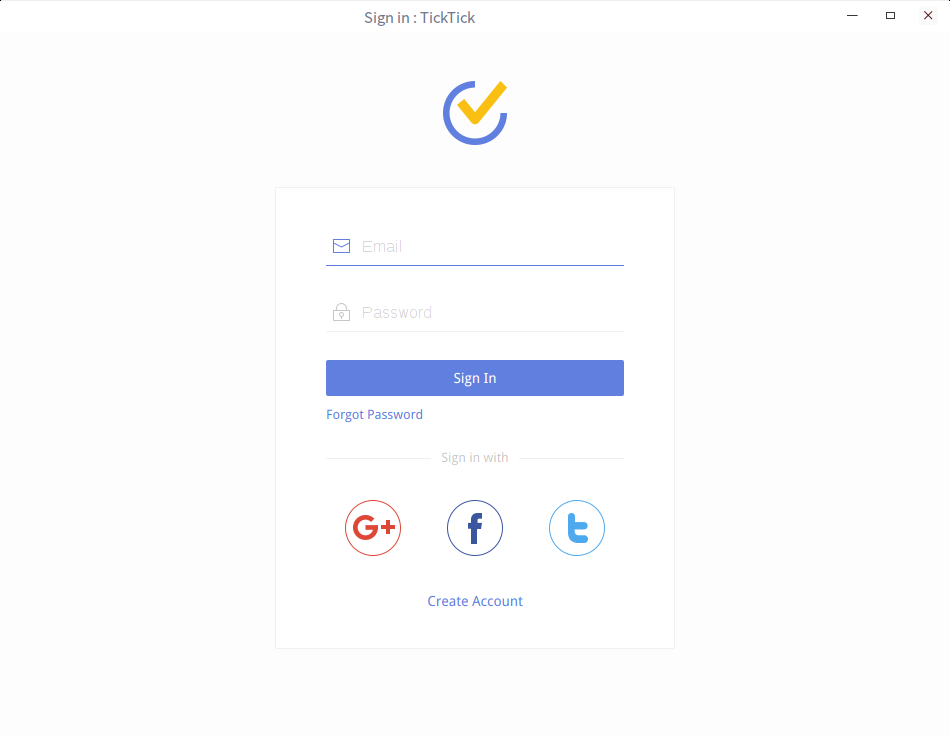

关于使用Python对Web应用打包的问题,我们可以通过pyinstaller这个库进行封装,在这个过程中我们可以将我们的应用封装在GTK+、Qt及Wx等GUI库中。
关于这方面的内容,觉得没有必要再介绍了,其绑定的语言一般都比较多,基本网上都可以找到对应的答案。而另外1种常见的方式是使用node-webkit的方式来实现,说到这里预计搞前端的朋友会跳出来了。
实话说,使用nodejs打包Web应用为桌面应用的问题不是什么稀罕事。而由于自己近期忙于公司业务自然语言处理中的工作,对这方面没多大的兴趣。而由于领导的迫切需求,于是只好将其打包为桌面应用的形式。
实际上,我们还可以将使用HTML编写的Web应用制作成混合应用的形式进行发布,相比而言会更为轻量级。
在这里,我们来看下Crosswalk这个项目,其提供了多个版本:
对于在Windows上开发的朋友可以选择下载Windows对应的软件包。这里我们以Linux系统作为介绍。
下载软件包
对于Ubuntu版本,我们可以通过https://download.01.org/crosswalk/releases/crosswalk/linux/deb/下载对应的包。在这里我们下载最新的24.53.59564位的版本。
接着,我们使用dpkg进行安装:
sudo dpkg -i crosswalk_24.53.595.0-1_amd64.deb
安装完成后,其将安装在/opt目录下。
编写配置文件
接着,我们来编写1个manifest.json的配置文件,这个文件是W3C中application说明的子集,详情可以查阅。
下面是1个最小化的配置文件:
{
"name": "My App Name",
"start_url": "index.html",
"xwalk_app_version": "0.1",
"xwalk_package_id": "com.abc.myapp",
"icons": [
{
"src": "icon.png",
"sizes": "72x72"
}
]
}
在这里,比较重要的是start_url这个配置选项,我们需要指定为URL地址,可以是文件名也可以使用URL。而这个文件我们可以手动创建,当然更多的是通过crosswalk-app命令来进行生成:
> crosswalk-app create com.abc.myapp
这样,就生成了1个manifest.json文件,其内容如下:
{
"name": "myapp",
"short_name": "myapp",
"background_color": "#ffffff",
"display": "standalone",
"orientation": "any",
"start_url": "index.html",
"xwalk_app_version": "0.1",
"xwalk_command_line": "",
"xwalk_package_id": "com.abc.myapp",
"xwalk_target_platforms": ["android"],
"xwalk_android_animatable_view": true,
"xwalk_android_keep_screen_on": false,
"xwalk_android_permissions": [
"ACCESS_NETWORK_STATE",
"ACCESS_WIFI_STATE",
"INTERNET"
],
"xwalk_windows_update_id": "73148800-8517-7725-5290-324729867281",
"icons": [
{
"src": "icon.png",
"sizes": "72x72"
}
]
}
生成对应的配置文件后,下面我们来构建应用。
构建应用
我们直接通过xwalk命令来进行操作:
$ xwalk ~/manifest.json
这样,其将运行当前用户目录下的manifest.json文件。下面我们来看1个关于ticktick的例子:
{
"name": "滴答清单",
"xwalk_version": "0.1",
"xwalk_bounds" : {
"width" : 950,
"height" : 704,
"max-width" : 1920,
"max-height" :1080
},
"icons": [
{
"src": "ticktick.png",
"sizes": "48x48",
"type": "image/png",
"density": "1.0"
}
],
"start_url": "https://cn.ticktick.com/signin",
"display": "standalone"
}
在这里,由于在Linux上ticktick并没有提供对应的版本,在这里我们对其提供的Web版本进行封装来实现平时工作的需求。
运行后,我们可以看到类似如下的页面:

可以看到此时将弹出1个页面,我们就可以进行对应的操作了。
最后,我们还可以将我们的应用打包为如下的格式:
- xpk,类似安卓的apk
- deb
其中,xpk的打包虽然官方说可以基于python,而在实际操作中竟然要你用nodejs。详情可以查阅打包为xpk和打包为deb。
参考文章: